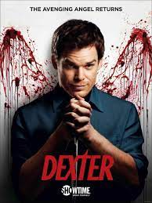
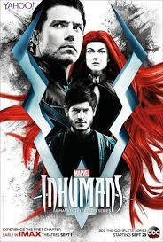

CINEINF

| INICIO |
PELICULAS |
SERIES |
ESTRENOS |
PROXIMAMENTE |
SERIES |

The Mandalorian es una serie de Disney + ambientada en el universo de Star Wars que se desarrolla tras la caída del Imperio y antes de la aparición de la Primera Orden, la serie sigue los pasos de Mando, un cazarecompensas perteneciente a la legendaria tribu de los Mandalorian, un pistolero solitario que trabaja en los confines de la galaxia, donde no alcanza la autoridad de la Nueva República.

La historia arranca durante la década de los 80, en el pueblo ficticio de Hawkins, Indiana, cuando un niño llamado Will Byers desaparece misteriosamente, hecho que destapa los extraños sucesos que tienen lugar en la zona, producto de una serie de experimentos que realiza el gobierno en un laboratorio científico cercano

The Walking Dead tiene lugar después del inicio de un apocalipsis zombi mundial. Los zombis, coloquialmente llamados «caminantes», se arrastran hacia los humanos vivos y otras criaturas para comerlos; se sienten atraídos por el ruido, como los disparos, y por diferentes aromas, por ejemplo humanos.

Dexter es un forense especializado en análisis de salpicaduras de sangre en el Departamento de Policía de Miami. También es un fiel novio, un divertido padrastro, un hermano confidente y ―para algunos― un friki de la sangre.

Los Inhumanos son una nueva especie que ha sido creada artificialmente por una raza alienígena. En un ritual que realizan cuando los inhumanos pasan de ser niños a adultos, utilizan las llamadas "Nieblas Terrigenas" para mutar a cada uno de ellos de manera diferente y otorgarles poderes sobrehumanos.

En la nueva serie de televisión 'Chucky', un idílico pueblo estadounidense se ve sumido en el caos cuando un muñeco Chucky clásico aparece en un mercadillo en un barrio residencial. Al poco, empiezan a producirse una serie de terroríficos asesinatos que destapan la hipocresía y los oscuros secretos de los vecinos